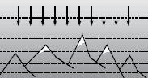
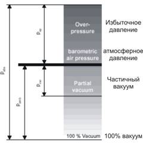
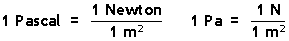

1.4.3. Давление (избыточное и абсолютное)

Атмосферное давление p атм [бар]
Атмосферное давление является следствием веса воздуха. Оно зависит от высоты и на уровне моря составляет
1013 мбар = 1,01325 бар = 760 мм ртутного столба = 101325 Па.
Разумеется, под уровнем моря следует понимать уровень мирового океана, без учета колебаний.
Чем выше точка, где делается измерение, тем меньше атмосферное давление.
Избыточное давление. Различные давления
Избыточное давление - это давление над атмосферным. В области компрессорных технологий, обычно указывается именно избыточное давление. Уточняющий индекс «изб» часто опускается. В атмосфере на уровне моря, избыточное давление составляет 0 бар изб.
Абсолютное давление pабс [бар абс.]
Абсолютное давление pабс - это сумма атмосферного давления p атм и избыточного давления p изб. В полном вакууме, абсолютное давление равно 0 бар абс. В атмосфере на уровне море, абсолютное давление составляет 1 бар абс.
В соответствии с СИ, давление надлежит указывать в паскалях (Па). Однако, в странах ЕС значительно более широко практикуется указание давления в барах.
Единица измерения атмосфера (1 атм = 0,981 бар изб.) широко используется в России и странах СНГ.

1 бар = 10195 мм.вод.ст.
Информационные материалы на данной странице могут перепечатываться в сети Интернет при обязательном размещении обратной ссылки на наш сайт. Размещайте следующий код ссылки: